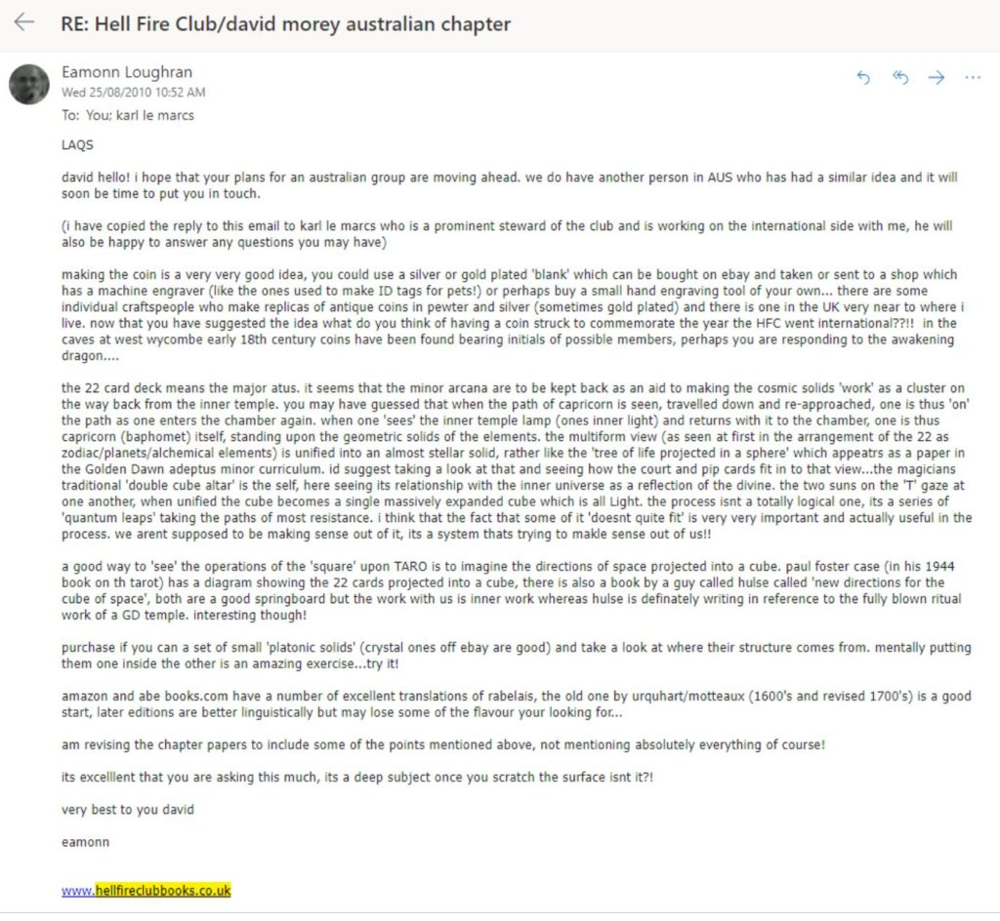
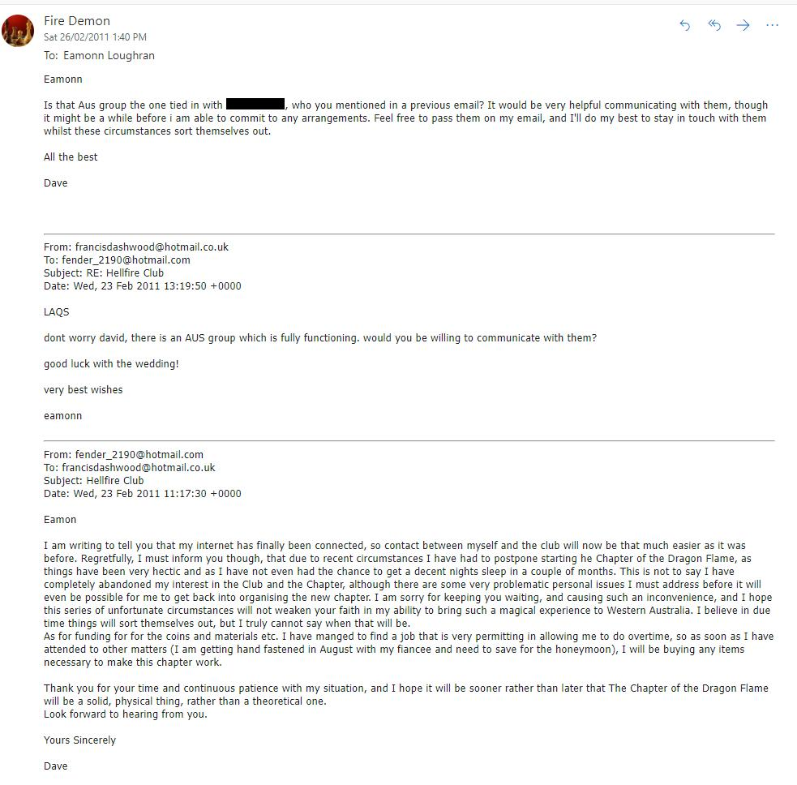
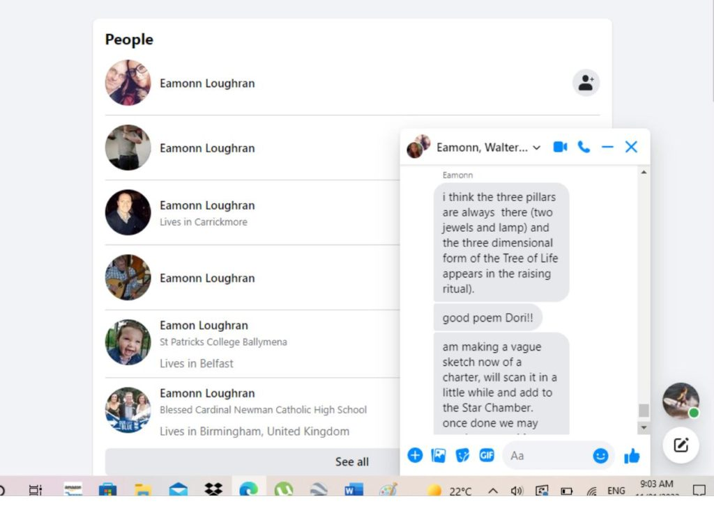

The following is the 16th part from a series of articles describing the adventure that a follower who goes by the handle "daegonmagus" has experienced since reading MM. They are very interesting and fascinating. I hope that you all learn from his journey and maybe learn a thing or two as he relates his unique experiences to the readership here. This particular read is truly enjoyable. I hope you all enjoy it as much as I have. -MM
Part 16 –Adventures in the Occult: Some Thoughts on The Hellfire Club
Ever thought about joining the Hellfire Club? Don’t have any clue about what the “hell” – pun intended – it actually is?
Allow me to explain:
The Hell Fire Club was the name of several clubs that were operating out of England in the 18th century, exclusively for high society “debauchees” or persons of apparent “quality” who wished to take part in socially perceived immoral acts. In other words, it was a club for politicians and other well connected “gentlemen” that wanted to waste their {usually inherited} money on gambling, drinking and having sex. Other things said to be engaged in in the club were poetry, philosophy, and the ridicule of religion, as it was of a time when blasphemy of the church was catching on.
The clubs were rumoured to have distant ties to an elite society known only as The Order of the Second Circle. Don’t ask me who those guys were, because I honestly have no fucking clue. The actual activities and membership, though, have long been lost to time. The first official club was established by the Duke of Wharton in London in 1718, though the most notorious of the clubs was one established by a man named Sir Francis Dashwood who met irregularly from 1749 to 1766 in England. Originally, Dashwood’s club wasn’t actually known as a Hell Fire Club – this name came later on. His club seemed to have gone through change of name every time there was a change of location of the Club’s get togethers; Brotherhood of St. Francis of Wycombe, Order of Knights of West Wycombe, The Order of the Friars of St Francis of Wycombe, Monks or Friars of Medmenham, or, `more recently, The Priory of The Knights of St Francis were a few of the names the club as known as.
Dashwood’s club was aimed at partaking in Pagan rituals in salutation of Greek and Roman gods, particularly those of wine (Bacchus and Dionysus etc). In fact, Dashwood apparently had many statues of similar Greek and Roman gods adorning his gardens of Medmenham Abbey. In addition to the Pagan rituals, Dashwood’s club was said to hold mock rituals, distribute items of pornographic nature amongst its members and engage in much “drinking” and “wenching”.
Whereas Wharton’s club was apparently more of a satirical joke meant to shock the outside world, with claims that the president of the club was the Devil himself, though the worship of such deities was not undertaken with the club. The members, did however call themselves “devils” in allusion to their often frowned upon behaviour. An interesting fact of Wharton’s club was that both men and women were admitted as equals, which was practically unheard of for other clubs of the time. Dashwood allowed female members into his clubs which were called nuns. Of course, his club seems to be the one that attracted legends of Black mass and demon and Satan worship, though whether any of that took place is speculation at best. Here’s a fun fact, Aleister Crowley got his infamous “do what thou wilt” line for his Thelemic order from an inscription above one of Dashwood’s doors at Medmenham Abbey.
Also worthy of note is that Dashwood eventually moved his club out of Medmenham into some chalk caves in West Wycombe when the owners of the estate sought to have renovations carried out. These caves ended up being where the meetings were held until the club’s eventual demise, which basically came about due to one of the members becoming involved in a political scandal. This was never something I was told upon becoming involved with the club, but is all readily available on Wikipedia for the curious reader.
What you won’t come across, however is a written record of the rise and rapid fall of the Hell Fire Club as it pertains to the modern era. The bit that I had a {semi} active involvement in breaking out of England and into the international domain. I feel it is necessary to write about as a lot of members and non members alike got right royally screwed over, and still are being screwed. This is some recognition of their efforts out of my own well of respect.
So, consider this an offer of some unfettered wisdom from someone who was actively involved in expanding its chapters internationally, because there was and still is a very active effort on the founder’s part to bury the work us international Stewards put into that expansion.
The Hell Fire Club I am a Steward of is an evolution of Dashwood’s Club. Though when I joined it was very far from being a Club for getting together and having orgies. I was around 19 or 20 when I stumbled across it.
Let’s back up a bit to my high school years. We all know I was into some very “fringe” concepts with my lucid dreaming and astral projection practices while I was at school. I studied the occult in the library when I was supposed to be doing research for science which, to be honest, I found quite boring. I wasn’t that I wasn’t good at it, it is just that I absorbed information at quite rapid pace from only a few glances through the work, so the concept of doing homework or extended study was quite lost on me. I’d prefer to use the time to learn in other areas that I knew a public schooling system was never going to bother teaching me. So yeah, conspiracies regarding the illuminati, the deep state, the freemasons, and reptilian shapeshifters etc were all things I had racked up hours of study on even at the age of fifteen. Though I didn’t necessarily believe in most of them, I was however somewhat of a walking encyclopedia when it came to the occult, astral projection, lucid dreaming, psychic happenings and other metaphysical subjects. To me all this was far more interesting to talk about than how to work out the speed of an apple falling from a tree or whatever they taught in general physics classes. Yawn.
And this presented a bit of a problem, because I was one of the only people in the entire school that had such an understanding of the metaphysical. It’s all well and good for those that have no first hand experience in these arts, but when you have been spending a good chunk of your youth flying around in the astral planes or fighting demons in lucidity, it’s hard not to find every day life quite bland. I yearned for others to talk to about this “crazy” world I knew too much about, and sometimes even indulged my straight edged friends a little too liberally to be met with nothing but blank stares. There was one other guy I use to practice healing and psychic shielding with – a guy named Blake – but he ended up running off to join some cult almost as soon as school had finished in an effort to “stay spiritual”. He was even kind enough to {rather forcefully} invite me in to it and try to get me to stay {by not letting me fucking leave}. So there went my Hogwarts connection.
Regardless, my studies continued well past school. I started collecting the oldest manuscripts of any given occult subject I could find, figuring information would be more “pure” if it came directly from the source before its true meaning could be lost in translation and transliteration. If a book was a few hundred years old and had something to do with “magic” I simply had to have it, regardless of the cost. And it wasn’t that I wanted to specifically practice said magic either; I simply wanted to broaden my knowledge in those areas. Because, as any wise person should know, knowledge is power.
So I was looking for books. Old books, antique books, and books with evident occult connections, and this was how I stumbled upon the Hellfire Club. You see, the club’s Steward was a Master Book binder, and he somehow managed to secure rights to republish out of print occult works; some really fucking nice and old {and powerful} manuscripts. Things like photocopies of diaries from 15th century alchemists, original workings of the Golden Dawn, some stuff on Freemasonry, other stuff on Crowley, Copies of Solomonic manuscripts dating back to the 1500s etc. These editions were bound “exclusively for the Hell Fire Club”, though that didn’t mean you had to be a member to purchase them. What can I say, I was instantly hooked. Some of these editions came bound in a standard cloth form, and others – the more exotic and rare – came leather bound with hand tooled emblems and insignia pressed and then gilded into the fronts. The collection would have made any practicing occultist weep, mainly due to the price tags. It wasn’t uncommon to find these books valued at over $500 a pop, some even in the thousands.
I admit, a few titles really caught my attention, and my curiosity was piqued as the web site stated they were taking on new members. Although no history was given as to the association with the Hell Fire Clubs of the past, a brief summary of the club and its values were given, which aligned with my studies into alchemy. Essentially, the whole point of the club was to better its members through applying alchemical concepts to one’s meditations as a basis to initiate a spiritual shift in consciousness. This is how it was pitched anyway, or something along those lines. One may recall I was never big on joining any occult organisation that had a ranking system in place, and this is where the HFC tickled my fancy over other organisations such as the Freemasons, the Ordo Templi Orientis and Crowley’s Argentum Astrum etc. Upon initiation into the HFC, all members were considered equal as everyone else. The Stewards, who were there solely to keep the various Chapter on course would be rotated on a yearly basis so as to keep up with this equality. Plus, because of the way the Club was structured, self initiation was not only possible but highly encouraged (I think this was really to help expand internationally more than anything).
So I sent the English Steward, Eamonn, an email stating I was interested in joining. We got to talking and he evidently became impressed with my thirst for occult knowledge, to compliment what little I already knew. He asked me if I wanted to help bring the Club to Australia and create my own Chapter, to which I was quite apprehensive at first, though he assured me he would give me any help I needed and that he could provide (it ended up being quite a dismal amount of help indeed). After some back and forth, he eventually convinced me to start my own Chapter in Western Australia, and with that I established my Chapter of Dragon Flame (an intentional anagram of “A Pagan force meld forth”), under his direct instruction, then he put me in contact with the Stewards of the other States.
Remember, this was before Facebook really took off, so to begin with the plan was to coordinate everything through a Yahoo group, but nothing ever eventuated from it. It wasn’t until the other Stewards finally joined facebook that I was able to communicate with them much more freely, and found solace I hadn’t found since my conversations with Blake (not including those discussions I had had with SD). These were occultists – real occultists – that had been involved in Hermetic societies for most of their life, some even being high ranking Mason’s. Others had even created their own Hermetic Orders that borrowed heavily from Godlen Dawn literature. Needless to say, I got along very well with them, and became rather respected given my understanding of the Kabbalistic Tree of Life and how it pertained to alchemy, and my occult knowledge in general. If you ever wanted a lesson in occult matters – astral projection, magic, lucid dreaming etc then this was the group to be in. Some of them were even contacted by non physical “Masters” just as I was about to be. It was repository of information that you would never find in any school or public library.
Thus I was very much in the Hell Fire Club’s “inner circle”, and this was a direct evolution of Francis Dashwood’s Club; Eamon was in possession of some of the original paperwork used by Dashwood and his associates, and even went so far as to conduct the Clubs meetings in the same chalk caves of West Wycombe, which became known as the “Hellfire Caves”. Whatever the club once was in regards to its debauch behaviour, it had become reworked into something which legitimately focused on inner reflection and the development of the spiritual self, thanks to the work and vision Eamonn put into it. This was evident in the other members I have since become quite good friends with (one of the Stewards even sent me a bottle of pure Myrr oil when he heard my hand had been cut open – quite an expensive and sacred oil to gift out to someone you’ve never met).
I even had a few astral projection and lucid dreaming experiences that were directly related to the Club, and a somewhat mystical experience that hinted at the “overthrowing of the armour king to make way for the king of fire” (which I took to mean the rule of the military industrial complex to make way for the rule of the spirit). Though, I never had the opportunity to partake in any orgies. How unfortunate.
SD, being Pagan and into much of the same ideologies and concepts as me joined as a founding member of my own Chapter, though for a time we floundered as there was absolutely no interest by anyone in our State. We initiated another member only to find he was more interested in serving his own carnal pleasures than he was for spiritual development (turned out the guy was a fucking serial rapist and had deep connections within the OTO, Freemasons and was a part of pretty much every Pagan meetup group in our area, so there went the idea of expansion), and that put us off to the point that our Chapter became a somewhat private affair for our own spiritual development. We conducted a few rituals based off of the ideologies of the Club, but I found it more beneficial to rework these into my own concepts on Alchemy that I was now fully invested in, and contemplate them in silent meditation. I believe these concepts and meditations were what led to my eventual contact with the Elder Guardians in 2012 when coupled with my LD practices.
In regards to the activities of Eamon and the other members, they continued with their regular meetups, but for me and SD, it was a several year period of stagnation. Of course, I still remained in close contact with the other Stewards and Eamonn, and engaged in regular chats with them all both privately and publicly on the Club’s Facebook pages. By this stage I had invested a few thousand dollars in some of Eamonn’s books which constituted my “occult library” (there was some good, rare books in this library). Eamonn had also commissioned me to help on some of his upcoming works, knowing that I was rather handy when it came to using photoshop for touching up “noisy” images. It seemed his work on gaining an international foothold was paying off as he now had established connections (and thus Chapters) within the USA and throughout Europe as well as in almost every State of Australia. SD and I were added to the “Hellfire Star Chamber” along with the other Stewards to discuss drafting of the proper charters for each Chapter and other such necessities that would move it full steam ahead. I guess Eamonn envisioned it growing as big as Freemasonry or something.
With things seemingly moving along nicely, I was inspired to revisit my Chapter of Dragon Flame and begin structuring it into something more usable and in line with the Hell Fire Club’s Goals. I began drafting my own charter with an idea to properly promote it amongst the limited occult societies in my area. I wrote poems and verse that I posted amongst the Stewards in the Starfire Chamber that even Eamonn himself suggested were good enough to be used for all of the Chapter both, original and international. Whether those poems and verse arse still in use is a mystery to me, though if they are then technically they are being used out of copyright, not that I really give a shit.
The Charter
Here is a {somewhat incomplete} charter I wrote for my Chapter of Dragon Flame. As you can see, there is nothing inherently sinister within it, and it was based heavily on the chapter papers Eamonn wrote, bound and distributed to the Hell Fire Club’s Members: The whole purpose of my club was utilise HFC rituals as a form of unlocking the higher self within the candidate. I wanted people to experience that “god mode” form of consciousness that I had experienced during my times with Elder Guardians.
THE CLUB’S INTENTION: To bring one into a new perception of oneself by symbolic means.
Elements needed to effectively be in chapter:
- Membership cards/coins must be made for the initiation of guests, and any spares used to decorate the decanter/bottle on the occasion of guest initiation plus an extra gold coin.
- A blue and red coloured robe
- A beaked mask (one per member)
- A Bishop’s/ Wizard’s hat/ mitre reserved for the appointed Abbot’s duties
- A floor/ table cloth printed/embroidered with a zodiac or stars. If none is available then the Major Arcana of a Tarot set arranged in three rings (12-7-3) or a set of 12v zodiacal cards from Uranias Mirror can be used.
- Six Candlesticks (representing the four niches/ doves and two paths in the caves) to signify the Towers of the Abbey of Theleme in (Rabelais Book 2), named after the winds in the classical world: Arctice, Calaer, Anatole, Mesembrine, Hesperia, Cryere.
- A lamp/ globe/ bowl suspended from the ceiling above the floor cloth, preferably one that may contain a lighted taper/ candle.
- A bottle/ decanter of wine/ mead in which the coin is to be cast during the guests initiation ceremony as well as a chalice or goblet for drinking of said wine.
- Pentagram and Hexagram Sketches as well as the Stewards Jewel and a set of Platonic Solid Models to signify the two keys. The letters T.R.I.N.C. must be available, preferably so that they can be rearranged as is done in the ceremony of the second key.
- Any available object that can act as a tribute to Francis Dashwood, whether it be a portrait of him, an object from the club or an empty chair reserved for the presence of the founder.
- A scroll bearing the poem called ‘The 108 Steps” to be laid at the bottom of the floor cloth
Membership Cards: Exist to aid all persons involved in the club and available only through properly appointed Stewards of each Chapter. To be completed and issued to successful applicants on an individual basis only. In early days coins or token were used in place of the cards, engraved or marked by/ for the individual. The coin/token/ card should be regarded as the sole guarantee that the lessons of the Chapter have been relayed by a Steward in an appropriate manner, and that the persons connection is a true one.
A record should be kept by the Stewards of the names of those in which a card is issued, and allow other chapters to request information regarding membership status in order that visiting members from other areas are properly received, though it should be noted that the right to a membership card does not necessarily guarantee admittance to another chapter. Politeness holds sway and all members wishing to visit another chapter should either wait to be invited or contact an appropriate Steward to arrange asocial meeting in advance.
PRELIMINARY ARRANGEMENTS:
- The floor cloth is to be aligned so that the doves point to the principle points of the compass; the main door of this room should open towards the first path of the inner temple.
- The lamp is to be hung in the centre of the room above the floor cloth. The only light in the room should emanate from this lamp alone.
- Around the internal space is to be a representation of a celestial zodiac, depicted through the Major Arcana (Trumps) of the Tarot deck, which are placed in exact alignment of the zodiac at the solstices in a series of 3 – 7 – 12.
- At the extremities around the cloth behind the doves are placed four candlesticks to represent the four niches.
- In the centre of the floor cloth is to be placed the bottle/decanter with the members coins strewn about next to it.
- At the bottom of the floor cloth should be laid the poem ‘The 108 Steps” with a gold coin placed atop it.
- On the opposite side of the scroll, where the rings of the Major Arcana align, is to be placed a pentagram with the Letters T.R.I.N.C. enclosed in its outer spaces along with a platonic solid at one edge and the Stewards Jewel at the other edge.
The four Doves or degrees: The object of the members of the Hell Fire Club is to better oneself spiritually by meditating and applying one’s mind to the occult symbology of alchemy guided on by an appointed Steward. Although there are no formal degrees in the sense of rank, one must first progress through a series of four non-linear states along the journey to their inner self.
- Guests are invited to attend Chapter meetings by a member of the HFC whereby they can partake in the first of many rituals of casting a coin at the decanter and taking a drink of its contents. Once this first rite of passage has been completed the Guest may then apply for membership whereby they become a member if accepted by the club. Guests and preparations of what they may see or experience are the sole responsibilities of the inviting member. Watch Words for guests are Friendliness and Discretion.
- Members are guests that have completed the first rite of passage and on applying for membership, have been approved by an appointed Steward. A successful applicant may then apply to the Steward of their Chapter for advice on the deeper interpretation of the symbols associated with the club. The privilege of inviting Guests to the chapter meetings is restricted to members alone, and for practical reasons is kept to one Guest per member per meeting. Watch words for members are Sincerity and Application.
- A Steward is essentially any person whose membership has passed from the level of the inner desire for experience to the outward manifestation of that in literature, mathematics, public speaking, art, business or any other engagement. They guide the Club as one would a ship, relating from memory the legends, traditions and symbols and assist others in taking their first steps on the road to inner discovery. There is usually only one Steward in Chapter at once, the position being revoted upon by members every year. Watch words are Hospitality and Self Sacrifice.
- A Prior/ Prioress is someone who has walked the inner road of themselves and has effectively returned to the beginning. It is the prior’s/ prioress’s duty to continue the seed of the club, and only they are able to begin a new chapter of their own. Watch Words for priors are Work and Silence.
The office of the abbot: The Abbot’s role lies outside of the four degrees and is not a level attained in the club by application of oneself. Instead it is an annually elected role, enabling all members of the club to exert an influence upon its development. The Abbot, whilst appearing to be of merriment and even disorder, is vital to the Harmony and well being of the club. It is in fact an evolutionary force.
The hell fire club greeting: The Steward welcomes all of those who have made it to Chapter using the LAQS motto and gives a brief explanation of any themes they have thought relevant for after ritual.
Layout of the 12 rituals of the hfc:
- The Ritual Of Fire – to be completed in the sign of Gemini (ideally in the last 10 degrees of the sign, ie 11th – 20th of June )
- Ritual Of Air – to be completed in the sign of Cancer during midwinter (ideally at the very start of the sign on the 21st of June.
- Ritual II
Possible Set Up:
- A permanent pentagram (circle) set up with four “pillars” representing the niches of TARO (north, south, east and west), and another two representing the “gate” or “entrance” to the circle, with rocks filling the spaces to symbolise the cave.
- An empty chair for the presence of Dashwood.
- The candles representing the Guest to be lit from the candle of the T niche.
Ritual of Fire:
Aim:
- To make the Guest subconsciously aware of the fact that they are element of fire, which is associated with the tetrahedron
-
- To be facilitated by the building and lighting of a fire by the Guest
- To subconsciously open the path of Cancer for the Guest
- To be facilitated by the alignment of Cancer (Chariot) with the element of Fire (Judgement) on the floor cloth and the recitation of the passage explaining as such.
- To connect the Guest with the archetypal energies of Francis Dashwood and the original Hell Fire Club both consciously and sub consciously
- To be facilitated by the empty chair, and recitation of a brief speech acknowledging Francis Dashwood
- To connect the Guest with the archetypal energies of the Abbey Of Theleme
- To be facilitated by explaining the four niches of T.A.R.O. and the square that they comprise
- To make the Guest subconsciously aware that by throwing the coin they are taking the first step in the transmutation of fire into air.
- To be facilitated by the recitation of the poem of the guest.
- To symbolically cast aside the material constraints society has placed upon the Guest
- To be facilitated by the casting of a coin at the decanter
- To make the Guest aware of the essential relationship of themselves
- To be facilitated by the drinking of the wine.
Papers to be given:
- Introductory papers on the club, what it’s about, it’s goal etc.
- An explanation of Archetypal energies
- An introduction on Alchemy
- An introduction The Kabalistic Tree of Life
- An explanation of the Abbey of Theleme
Items needed for next meeting:
The symbology behind the ritual of the guest is to be the quintessential starting point of the HFC: CODF. I feel it important that this ritual be designed so that the initiate, after freeing themself of their materialistic constraints by throwing the coin at the decanter, be able to connect with the archetypes of Francis Dashwood himself and the rest of his members. I am still unsure how the latter can be acted out in ritual, perhaps more thorough research into his character will prove useful. It may also be worth looking making a rite that mimics certain aspects of the positioning of the original caves when laying out the elements of the club.
The location of this ritual should be carried out in a location bearing similar attributes to that of the river of Styx in the caves of West Wycombe, or another underground place used, perhaps a sacred well, burial ground or even a consecrated space in a room dedicated to the purpose. I propose to use the clearing behind our house in MH for the job as there is a nearby creek which resembles the aforementioned river, and a secret spot which may act as the inner temple “hidden” by undergrowth.
Originally I proposed to have the Guest build and light a fire, so that they are physically and mentally becoming the element of the tetrahedron, but Storme has suggested this may be in efficient as not everyone is competent at building fires, so we made the decision that a candle should be lit instead, for each Guests, which can then be blown out at the next Chapter meting during the ritual of Air (obviously the candle will have to be re lit, as it cannot burn between Chapters)
The ritual is started by other members taking up position around the floor cloth, and the HFC greeting cited. The member who invited the Guest shall then give a brief introduction of them and what attributes led them to give an invitation, to which an appointed Steward will quote the poem:
Recitation of the Gate of Cancer:
Behold thee
In the position of Gemini you dwell
Study its composition
For its passing is nigh
But with it comes the opening of Cancer’s gate,
And thus the Chariot you shall ride across Zodiac of yourself.
So mote it be
Poem of the Guest
O guest whoso dares to seek our secret keys,
For the benefit of no other
And no other shall thee seek to please
In order that you will discover
That you and you alone are the sun
Rising in Cancer
To traverse the ocean of the one
So that you may find the answer
That lies deep within our inner temple
Capricorn will show you the way
If only thought of our secret be made ample
When the Devil is yours to slay
And the Corinthian book be melted down
So that the seven alchemical metals are found
But first we ask that you seek our jewel
Lest thee should yourself become the fool
Casting aside want of wealth
Be received by us in benevolence and health
Throw now your coin at the bottle of TRINC
And in the name of Dashwood drink
Study the lines in this poem you ought
As you dare O Guest to set Wealth at naught.
A coin is thrown at the bottle/ decanter in the centre of the floor cloth by the Guest/s, as they envision their shackles being released, to signify their willingness to sacrifice the materialistic profanities which pose a hindrance to their own spiritual progression. Mention is given by the Steward to the ‘TRINC’ sound made as the coin hits the bottle and its’ similarity to the word ‘trokken’ meaning to drink. The Guest/s then drinks of the wine within the decanter, which is passed around to each member to signify the equality of the members of the club. Once the Guest/s has sipped upon the wine, the Steward tells them they have freed themselves of the limitations of materialism, and that for a new perspective to take place within the individuals mind, one must in time first come to the realisation of death as the next passage to wisdom. The ritual is finished by the Steward quoting:
“We have shown you whence the path to the inner self lies, it is now your decision whether or not to walk it. If you do, then may this club and its members, being both of flesh and of spirit, provide the necessary guidance, acting as a vessel for your journey across the ocean of the zodiac.”
Afterwards a relevant theme designed to expand the mind and open the psyche may be discussed between all in chapter including any Guests.
At the end of Chapter the Guest/s is asked to meditate upon everything revealed to them in chapter in their own time, and keep a record of any changes that may occur in their consciousness whether it be manifested physically around them or astrally in their dreams, and that when they feel ready they may apply for full membership. They are to be given a paper which highlights the goal of the club as well as explains what an archetype is and how it applies to the symbology behind the HFC.
Ritual Of AIR:
Aim:
- To receive the Guest as a new Member of the HFC
- To be facilitated by the giving of a membership card and a gold coin (as opposed to the silver one thrown at the decanter.)
- To make the new Member subconsciously aware that they have transmuted the first of the elements into the second
-
- To be facilitated by the extinguishing of the flame first created by the Guest with air from their breath and the alignment of the element Air (Fool) on the floor cloth to the planetary and zodiacal rings (120 degrees), and the recitation of the first transmutation.
- To subconsciously establish the floor cloth as the universe
- To be facilitated by the movement of the outer ring of the 12 zodiacal cards by 30 degrees (one zodiacal card) anti-clockwise and the movement of the inner ring of 7 planetary cards by 51.42 degrees (one planetary card) anti-clockwise
- To subconsciously establish that the 3 rings of the 22 cards Major Arcana as being the outward projections of the inner temple lamp.
- To be facilitated by the moving of the decanter from the top of the floor cloth (between the Pentagram and Stewards Jewel) to its centre (in the middle of the inner ring of the elemental cards) and the recitation of the lamps description from “The Oracle Of The Bottle”
- To subconsciously establish the square of opposition
- To be facilitated by the recitation of the meaning of T.A.R.O. and how it represents the four niches of the Abbey of Theleme
- To subconsciously establish the Steward’s Jewel as being an anchor in the ocean of universe
- To be facilitated by the action of rowing the new member around the floor cloth by the Steward whereby they stop at Cancer
- To consciously establish the Tree of Life as being a map of the Tarot and a
- To be facilitated by reciting the symbolism of the double suns of the Stewards’ Jewel, and how they relate to the twin paths of Cancer and Capricorn, and how it is a hexagram.
The Temple Lamp – Oracle of the Bottle:
Behold the most admirable lamp of our Oracle
That dispenses so large a light over our temple
Though we lay underground
We can still see as clearly as day
It dangles from a ring of massy gold,
as thick as any clenched fist
Three chains most curiously wrought
Hung below it
And in a triangle supported a round plate of fine gold
Four holes, each of which an empty ball was fastened
Hollow within
And open at the top
One amethyst
Another carbuncle
The third opal
The last anthracites
All full of burning water
Five times distilled in a serpentine lymbeck
Inconsumptible nonetheless
In each was a flaming wick
The First Transmutation
We have received your pledge to enter our temple and discover the mysteries that lie therein. Extinguish, now the flame of the tetrahedron with the breath of your being, and take up your new place amongst the airs of the octahedron….
I now beseech unto you the honour of a being a full member of the Hell Fire Club [to which the coin and card are given], and reveal unto you the secret of the pillars of the Abbey of Theleme, signified by the four doves placed upon our floor cloth. T A R O, together these pillars signify the four cardinal directions, the 4 dimensions of the cube of space, as well as the four elements of our club, and together with secrets yet to be revealed unto thee, they shall serve as the basis of your self transformation.
Join us, now as we navigate the vessel of ourselves through the ocean of the zodiac, seeking to take up anchor at the secret pathway hidden behind the devil.
[The Steward rows around the room, stopping at the alignment of Cancer ]
To aid you in your voyage we give unto thee, willingly, the gift of our jewel. Do not tarry long in its mysteries, for like the pillars they are many. For now may it serve solely as your own anchor, which you will cast upon the Gate of Cancer.
[The Steward gives the jewel to the new member who throws it at the Chariot card.]
Rejoice, for I now declare the path of Cancer open, and inform ye that you are indeed on the right course.
A coin and membership card is to be presented to any new members.
Papers to be given:
-
- The Stewards Jewel
- The Hebrew Alphabet & Gematria
Ritual III: the four doves.
After membership has been granted to a guest they are then allowed to partake in the first ritual which is designed to explain the significance the four doves bear to the four elements, and the colour of each element described. Members should be made aware that these four doves comprise what is called the square of opposition.
The ritual must encompass each element being made known, lighting a candle for fire, incense for air etc. A common circle casting may suffice, whereby meditation is focused upon the physical appearance of the Caves at West Wycombe, followed by the meditation of the newly opened pathway of cancer. Perhaps a ritual encompassing the sailing or entering of a boat to signify the opening of the pathway.
FURTHER STUDY: The writings of Francois Rabelais (Gargantua & Pantagruel), designs and positions of the various caves, grottoes, monuments and the great Mausoleum atop the hill at West Wycombe – England, Kabalistic Tree of Life, Platonic Solids, Corinthian Brass, Egyptian Mythology, Hypnerotomachia Poliphili (The Strife Of Love In A Dream) by Francesco Colonna, Cube of Space, Egyptian scheme of the Zodiac with decans, Square of opposition, Charles Johnstone’s “Crysal” aka “Adventures Of A Guinea”, Ars Combinatoria by Ramon Llull
…
And then the shit hit the proverbial fan. No sooner had the Starfire Chamber been assembled, than it was being torn apart by the very man who had spent over a decade bringing its international standing to fruition; Eamonn.
What started as a warning towards one of the members of his English chapter, for inappropriate behaviour towards other members, soon turned into a clash between his Chapter and the international ones. Regardless of whatever behaviour this individual displayed (which she has since shown remorse for), Eamonn used it as a pawn to get everyone involved and start taking sides. It was real petty schoolyard politics bullshit on his end, and quite frankly I was stunned he’d stooped so low.
I guess it was because this individual had made quite good friends with some of the international Stewards, so when they refused to depose her from the Club, Eamonn got annoyed. He gave everyone an ultimatum: side with him and continue on under his official establishment, or take the side of the person in question and lose any connection we once had with his chapter. Honestly, it was too much drama for my liking, and I preferred not to get involved, though I had noted similar drama in the past when it came to Eamonn.
There was one particular guy who had been affiliated with the club and helped establish it in America who began selling unofficial HFC branded insignia for big money against the wishes of Eamonn. In the same email he had dished out to members, it mentioned that not only was this guy a fraud but he was also a convicted pedophile and that Eamonn and the Club would have nothing else to do with him, which I thought at the time was fair enough. Though after this school yard politics tactic, I began to wonder just how much of that schpeel was actually true. It seemed to me Eamonn had a tendency to over exaggerate someone’s indiscretions if they pissed him off.
I was also aware that Eamon had been pushing the envelope when it came to the publishing rights he was given for some of the books he was making a high margin on; when it was mentioned by the owner of that copyright Eamonn was printing more than the agreed amount of copies, his reply was for them to “eat shit” – of course, I never told him I knew about that particular interview, and had given him the benefit of the doubt about it being a business misunderstanding. I guess I was being naïve.
There was also one other thing that was making me question Eamonn’s integrity, and that was the way I had caught him lying about sending me free copies of his latest work, which had been agreed by both of us as fair payment for my photoshopping work on them.
The son of a bitch fucking pressed me for weeks to give up my lunch breaks managing an electronics factory to get these out by the deadline. And a fair portion of what should have been my R&R time after work. In the end I couldn’t have given a shit about whether or not I received the works, but to be lied to about them and then to have Eamonn cease all communication with me because of it really stung me.
Turns out I wasn’t the only one he scammed; on a facebook group for rare occult works I found a community of disgruntled customers that had been waiting years – yes actual fucking years, like 2 or 3– for books from him they had spent a good deal of money on. After a brief read of their comments the total amount owed was easily over $20k. I like to believe that Eamonn just fell behind in his orders and that these guys eventually got their books, as I never pinned him for one who would intentionally deceive people for money, but regardless, there was talk of getting the police involved after he didn’t bother to reply to their emails. And talk from others who suggested it was common practice for Eamonn to go through stages of seeming professionalism only to finish it off with such fraudulent actions. Oh yeah, and he was on the fucking group.
So it was safe to say Eamonn, who seemed to be embodying the spirit of Aleister Crowley a little too literally, was fast burning the bridges he had established within the occult community, and getting quite a negative name for himself.
In the end the Stewards of the international Chapters decided he was too much of a liability and flipped him the metaphorical bird. We became our own separate entity completely disenfranchised from Eamonn and his chapter and whatever bullshit went with it, and Eamonn started refusing he ever had any involvement with any of us, even though it was his idea to expand internationally in the first place. Even though the whole club had been established on his ideologies. He said his fuck you’s and we said them right back.
How do I know he flat out refuses we had anything to do with his Club? Because a friend within the {American} OTO bought books from him and received a flyer asking him to join the HFC, to which Eamonn dismissed any connection to the international chapters, saying we had nothing whatsoever to do with his club and never had to begin with….Here’s the thing though, I still have the original emails proving otherwise. Whoopsie. In the words of the wise man who runs the site these words are posted on, don’t piss on someone’s leg and tell them it’s raining.
Consider it some recompense for the people still yet to receive their books: 


So there you have it; the true modern day history of the HFC.
For what it is worth, despite all the drama, I’d be lying if I said the club did not have a profound impact on me. Despite Eamonn’s shortcomings, he did lead me down the road of Alchemy I otherwise never would have set foot on and inadvertently gave me some auxiliary tools to unlock my higher self.
If you are interested in such things, then I sincerely recommend seeking out a Steward of the International Chapters, that are no longer affiliated with him. Sure you might get there with his Chapter, but that all depends on whether or not he actually sends you the books you pay for.
Like I said, I hope he just fell behind with his orders and has since completed them, but I honestly stopped bothering reading into anything he was up to a few years ago, so that is research the reader will have to invest their own time in. It was sad to see a community with such potential succumb to such childish bickering.
In regards to Eamonn, I don’t hate him; I always looked up to him for spiritual guidance.
Who knows, maybe life caught up with him and he saw the need to make a quick buck to pay for a debt or two he’d gotten himself into. I just hope for his sake he hasn’t dug himself a hole he is unable to get out of.
I like to believe that spark that made him want to expand his Club internationally for the spiritual betterment of the people is still alive and smouldering somewhere deep inside him.
You can visit the daegonmagus Index here…
MM Articles & Links
You’ll not find any big banners or popups here talking about cookies and privacy notices. There are no ads on this site (aside from the hosting ads – a necessary evil). Functionally and fundamentally, I just don’t make money off of this blog. It is NOT monetized. Finally, I don’t track you because I just don’t care to.
- You can start reading the articles by going HERE.
- You can visit the Index Page HERE to explore by article subject.
- You can also ask the author some questions. You can go HERE to find out how to go about this.
- You can find out more about the author HERE.
- If you have concerns or complaints, you can go HERE.
- If you want to make a donation, you can go HERE.